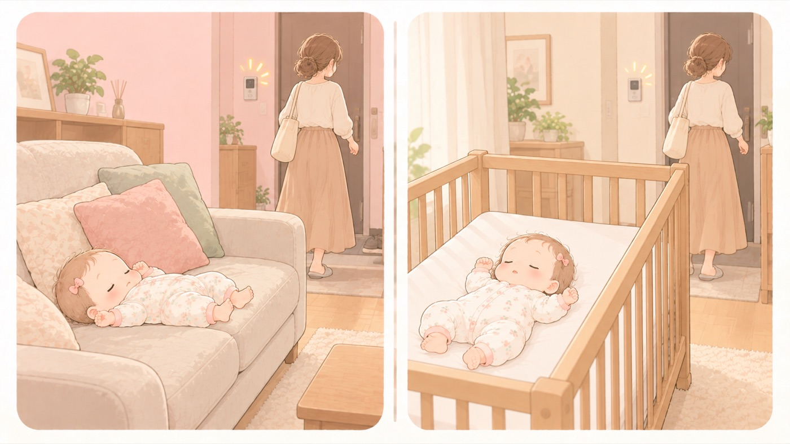

離れるとき
目を離すときは、置き場所を決めてから
離れないのは無理。先に「どこに置くか」を決めておく
インターホン、トイレ、上の子の呼び声、火にかけた鍋。赤ちゃんから離れる場面は一日に何度もあり、なくすことはできません。決めておくのは「離れないこと」ではなく、離れる前に赤ちゃんをどこに置くかです。

安全な置き場所を2か所決めておく
柵をいちばん上まで上げたベビーベッドと、床に敷いたプレイマット。この2つなら、とっさのときに迷いません。
あおむけで、まわりに何も置かずに寝かせる
ぬいぐるみ、クッション、タオル、スタイ、ひも状のものを残しません。
離れる前に、見える範囲を一度だけ確認する
手の届く所に小さなもの、コード、熱いものがないか。数秒で済みます。
戻る時間の見当をつけてから離れる
長くなりそうなら、連れて行くほうが早いこともあります。
- しないこと：ソファ・大人用ベッド・おむつ替え台に置いたまま離れない
寝返り前でも落ちます。すき間に挟まる、柔らかい面に顔が埋もれるという危険も重なります。 - しないこと：バウンサーやベビーチェアに座らせたまま離れない
ベルトをしていても、体がずり落ちてベルトで首が圧迫されることがあります。バウンサーは軽いので、赤ちゃんが動くと本体ごと動きます。眠ってしまったときは、傾いた姿勢であごが胸に埋まって気道がふさがります。 - すること：沐浴・入浴中は、どんなに短くても連れて出る
「すぐ戻るから」がいちばん危険です。わずかな水深でも溺れます。 - しないこと：上の子やペットと二人きりにしない
子ども同士の見守りは対策になりません。0歳では、犬による咬傷と、ウサギの咬傷が疑われた指の欠損が報告されています。どうしても離れる場面では、赤ちゃんを柵のあるベビーベッドに下ろし、上の子とペットを別の部屋に出してドアを閉めてから離れます。上の子には「見ていて」ではなく「赤ちゃんのいる部屋に入らないで」と頼みます。 - すること：泣きやまなくて限界のときは、安全な場所に寝かせて離れてよい
柵付きのベビーベッドなどにあおむけに寝かせ、部屋を出て、ひとりで泣かせておきます。5〜10分ごとに呼吸を確認します。これは公的な資料ですすめられている対処です。
🛍 グッズの選び方
PR- 床に敷くプレイマットがあると、「とりあえずここ」の置き場所が決まります。
- ベビーベッドは柵が上げ下げしやすいものを選びます。面倒だと上げなくなります。
- 別室で作業するなら、音と映像が手元に届くモニターがあると、戻る判断がしやすくなります。
- ケラッタ もっちりマシュマロマット 200×140cm（厚さ1.5cm）厚さ1.5cm。広く敷けるAmazonで見る →（新しいタブで開きます）
- カトージ ハイシートミニベビーベッドII プレミアム（新生児〜）床板を高くできる。新生児から使えるAmazonで見る →（新しいタブで開きます）
- パナソニック ベビーモニター KX-HC705🏅 マザーズセレクション大賞2025（ベビーモニター／ベビーカメラ）Amazonで見る →（新しいタブで開きます）
- Anker Eufy Baby Monitor C10アプリ連携。スマホからも見られるAmazonで見る →（新しいタブで開きます）
- Sense-U ベビーセンサー（一般医療機器）🏅 第16回キッズデザイン賞 奨励賞（Sense-Uベビービデオカメラと体動センサ3）Amazonで見る →（新しいタブで開きます）
- ケラッタ プレイマット シームレス 折りたたみ（防水・1級防音）折りたためる。使わない日は片づくAmazonで見る →（新しいタブで開きます）
リンクはAmazonアソシエイトリンクです。当サイトはアフィリエイトプログラムに参加しています。Amazonのアソシエイトとして、当サイトは適格販売により収入を得ています。 選び方の方針
この項目の根拠
- 教育・保育施設等における事故防止及び事故発生時の対応のためのガイドライン（こども家庭庁）（新しいタブで開きます）
顔が見えるあおむけで寝かせ、一人にしないこと。 - 赤ちゃんを揺さぶらないで ─ 乳幼児揺さぶられ症候群（SBS）を予防しましょう（日本小児科学会 監訳・PDF）（新しいタブで開きます）
泣きやまないとき、柵付きのベビーベッドなど安全なところに赤ちゃんをあおむけに寝かせ、部屋を出てひとりで泣かせておくこと。5〜10分ごとに呼吸状態を確認すること。 - 子どもの転落事故に注意！─住環境や発育・発達に応じた事前の対策を─（消費者庁・PDF）（新しいタブで開きます）
入院を必要とする事故のうち転落事故が最も多く約3割を占め、その約6割が頭部を受傷し、高い所に限らず比較的低い所からの転落であっても頭部の骨折や頭蓋内損傷の事故が発生していたこと。0歳児では、一時的に子どもを置いた場所から目を離した隙に転落する事故が目立つこと。家具等からの転落で入院した97件のうち、発生場所は「ベッド」34件（35.1%）が最も多く、次いで「椅子」18件、「テーブル類」17件であること。大人用ベッドに寝かせるのではなく満2歳になるまではできるだけベビーベッドに寝かせ、添い寝する場合も寝かしつけた後にできるだけ移すこと。ベビーベッドの柵は転落防止のため常に上げて使用すること。ベッドと壁の間に隙間ができないよう固定すること、隙間があると子どもが寝ている間に動き回って挟まり窒息するおそれがあること。ベッドの周りに枕・毛布・クッション等を置かないこと、衝撃緩和やすき間をなくす目的であっても鼻や口を覆ってしまうこと。一時的でも乳幼児をテーブルや台の上に寝かせるのはやめること。転落時には落下した場所で埋もれて窒息する等の二次的な事故にも注意が必要であること。 - バウンサー 取扱説明書（ベビービョルン・PDF）（新しいタブで開きます）
付き添いなしでひとりにしないこと。 - Injury Alert 傷害速報 動物による咬傷事例（No.2 犬による咬傷／No.130 ウサギ咬傷が疑われた指の欠損）（日本小児科学会）（新しいタブで開きます）
0歳で報告された動物による咬傷の事例（犬、ウサギ）。